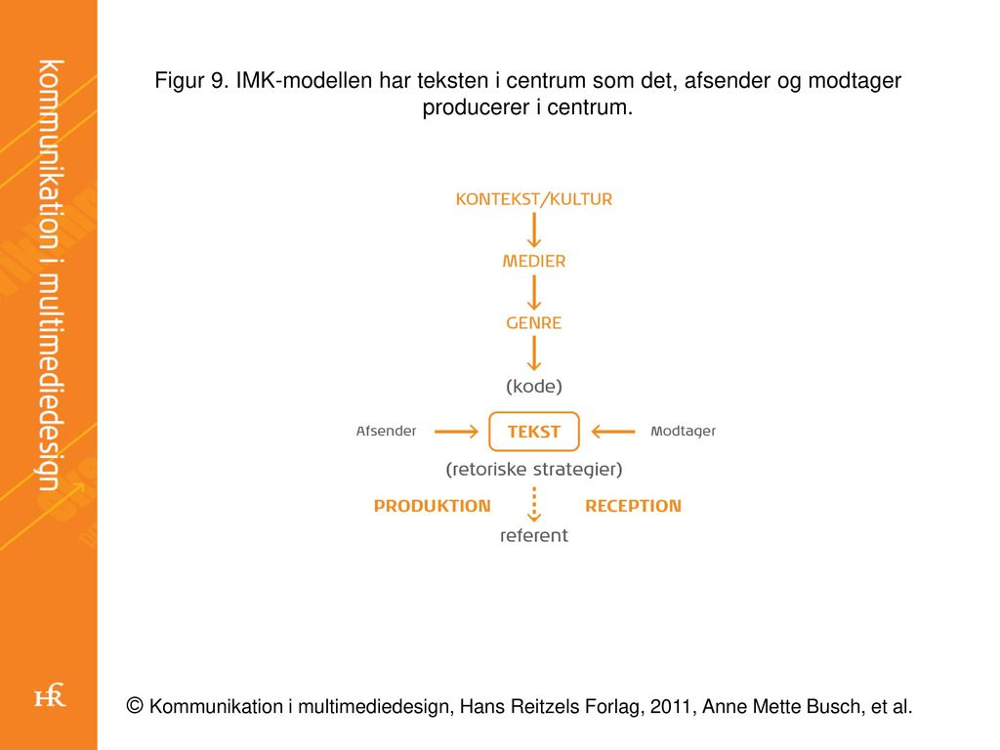

Kommunikation
Kommunikation kan udtrykke sig meget forskelligt, så den måde vi kommunikerer på, kan svinge en del. Kommunikation kan kategorisere i nogle kategorier. De kategorier som jeg har gået mest i dybde med på første hovedforløb er: verbal, nonverbal og skriftlig kommunikation. Kategorierne kan godt anvendes sammen og derved kan man opnå en bedre kommunikation.
Verbal kommunikation
Verbal kommunikation er det talte sprog. I starten af et interview er det altid godt at begynde med nogle venlige og opmuntrende ord, da starten kan påvirke hvordan resten af interview kommer til at forgå, ved at man begynder blødt, udviser man varme og åbenhed.
Nonverbal kommunikation
Nonverbal kommunikation henvender sig mest til brugen af ens toneleje og kropssprog. Sammen med den verbale kommunikation kan man opnå den bedst mulig svar fra modtageren, ved at have en rolig tonefald og være lytterne og reflektering over hvad modtageren fortæller.
Skriftlig kommunikation
Skriftlig kommunikation er for det meste en envejskommunikation, da modtageren ikke altid, har mulighed for at give respons og stille spørgsmål til hvad der er blevet skrevet. Dette kan medføre store konsekvenser, som misforståelser og mistolker budskabet, derfor er det vigtigt, som afsender tydeliggøre så meget som muligt for at få budskabet korrekt.
Kvantitativ metode
Kvantitativ metode kan finder man resultater ved spørgeskemaer eller lukket interview spørgsmål. Spørgeskemaer, kan man bruge til at finde svaret på hvor mange mennesker gøre noget/bruger noget.
- Fordelene ved kvantitativ er at man kan få svar fra mange mennesker på en gang og med de informationer, som man så kan lave statistik ud fra.
- Ulemperne ved kvantitativ er at man lære ikke noget nyt eller får øje på nogle problemer der måske er, man kan heller ikke være sikker på at folk er ærlige.
Kvalitativ metode
Kvalitativ metode foregår ved at man, lytter til folk. Man kan bruger metoden, når man gerne at finde det mulige problem/lære noget man ikke haft øje på endnu. Spørgsmålene er åbne så folk ikke kan nøjes med at svare ja eller nej og derved får man nye vinkler ind til tingene.
- Fordelene ved kvalitativ er, at man får nye vinkler/viden på tingene.
- Ulemperne ved kvalitativ er, at det kan tage lang tid, interviewe mange mennesker hvis behovet er for det.
Præsentationsteknik
Når man skal præsentere et produkt eller strategi er kommunikationen blandt mennesker meget vigtigt, men også de forskellige præsentationsteknikker der findes, som man benytte. Formålet med at præsentere er
- Informere
- Overtale
- Udanne
- Underholde
- Skabe og fastholde interesse
- Udvælg dit hovedbudskab – gentag det i begyndelsen, midten og slutningen
- Beskær indholdet – alle har ikke brug for al information
- Udvælg dine bedste argumenter – dem som rent faktisk overbeviser
- Skab struktur i din præsentation
- Fængende indledning – godt begyndt er halvt fuldendt
- Fængende, opsummerende afslutning – hvad skal de have med hjem?
- Tal langsomt når du holder præsentationer
- Slip hænderne løs under din præsentation
- Vær dig selv, når du holder dine præsentationer
- Øvelse, øvelse, øvelse
Paradigme
Paradigme er et græsk sammensat ord der betyder noget i stil med mønster. Den måde man bruger ordet i dag er mere som en form for tænkemåde eller en synsvinkel. Jeg ser det som en form for perception af verdenen. Der er overordnet set 3 paradigmer. Den naturvidenskablige er mere ren fakta uden at anskue det ud fra hvad folk mener eller ser. Kjolen er blå. Det kan vi måle at den er. Så er der det samnfundsvidenskablige paradigme her holdes stadigt meget af fakta, men der indrages meningsfortolkninger til resultatet. Man vil spørge folk om hvilken farve, de mener kjolen har, og så vil man ud fra det, finde ud af hvilken farve kjolen nok har. Til sidst er der det Humanistiske paradigme. Her er der langt mere en subjektiv indgangsvinkel til et emne. Her vil man sætte folk ned og snakke om kjolen og give folk mulighed, for at forklare hvorfor de mener kjolen er en given farve, og resultatet vil også være lidt mere flydende derefter, men med en stører forståelse for de mennesker der er med.
Naturvidenskabligt paradigme
Det naturvidenskablige paradigme vil man kun kunne bruge til noget, der kan måles eller vejes, so to speak. Man holder sig til ren fakta og prøver ikke at fortolke noget. så her kan man fortælle f.eks. hvor meget et molekyle vejer, men ikke hvorfor. Det er langt mere en hvilke metoder, der bliver anset som acceptable at bruge til en givet ting end så meget andet.
Samfundsvidenskabligt paradigme
Har fokus på afsenderen, så man kan forudsige hvilken effekt en given besked har. Det er mere fakta baseret. Afsenderen er den styrende i kommunikationen, og modtageren ses som værende passiv. Det bygger på at den undersøgende kan være objektiv. Man bruger her en blanding mellem kvantitativ og kvalitative undersøgelser. Bla. bruger det samfundsvidenskabelige paradigme en del metoder til at undersøge. Bla. Laswels formel (kanyle formlen.)
Humanistiske paradigme
Fokus på modtagerne, altså bliver modtageren ”medbestemmende” for hvilket budskab, der sker i kommunikationen. Der er fokus på interaktion og ikke kun den ensidet besked. Her er hvad modtagerne forstår meget vigtigere, end hvad hensigten med beskeden er. Her bruger man oftest kvalitative metoder. Bla. Imk modellen.
kanyle formlen.

Imk modellen.
Tekstproduktion
Når man skriver en tekst er det vigtig man har fokus på målgruppen, og den rette strategi man skal bruge. Ikke alle tekster kan bruges universalt.
Artikel
En kortere, selvstændig behandling af et emne, som typisk står i en avis eller et nyhedssite online. Teksten i en artikel kan b.la. være fagligt, nyhedspræget, eller skrevet fra en personlig vinkel. Uanset hvilken form, går en artikel ud på at skabe interesse, ved hjælp af et hurtigt overblik over noget bestemt indhold. Man vil typisk ikke læse hele artiklen, men kun det mest vigtige.
Brochure
Det er ekstremt vigtigt at strukturere indholdet i en brochure grundigt, med rigtig mange overvejelser omkring typografi og billeder. Elementerne skal arbejde sammen for at fremstå troværdigt i forhold til ens budskab. Her er et eksempel på hvordan man kan opbygge sin brochure fra bogen ’Kommunikation i multimediedesign’, kapitel 17 tekstproduktion. De fokuserer på en lampeforretning.
Annonce
Annoncer skal tale hurtigt og præcist til ens målgruppe. Annoncens overskrift skal være kort og fangende, motiv, billeder eller grafik skal fungere enten som en bekræftelse af overskriften, eller komme med en ironisk kommentar til den. Brødteksten skal være kort og klar, hvor man skal koge ens budskab ned til det mest basale. Logoet er ofte fulgt af et slogan, eller et payoff. Pligtteksten er til væsentlige forbehold, som eksempelvis begrænsninger i et tilbud, copyright info osv.
Tekster til web
At skrive tekster til web er et kapløb om læserens opmærksomhed. Derfor mener mange at det er bedre at navigere med billeder, men Jakob Nielsen, en anerkendt forsker i brugervenlighed på nettet har bevist gang på gang at tekstlinks er den bedste måde for brugere at navigere rundt på et site.
Sociale medier
Hvis man skal styre en organisations facebook profil, er det vigtigt man ikke skriver som var det ens egen. Man skal agere som brandet, og derfor være under nogen retningslinjer. Man kan bruge tekststrategien Försters temperamentale rose, som er inddelt i farvegrupperne:
Ved at bruge farvestrategien kan man eksempelvis briefe et hold af mennesker der skal være community management eller online support. Briefet kunne være at en leder siger at man skal være opmærksom på at folk kan reagere negativt i en periode, og at man derfor skal bruge den blå tilgang.